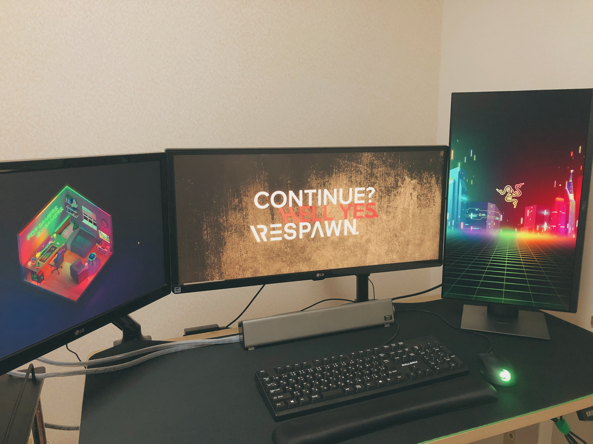

今後はゆるく毎月ごとに振返り記事を書いていこうかなと思っています。
というのも今月はいろいろあり再度テックブログの更新も頑張ろうかと思った次第です。
環境ってほんとに大事だと思います。
環境に左右されずにやれることをやれる人が一番強いですが、そんな人はごくわずかだと思います。
エンジニアは常に学習してキャッチアップすることが大事ですが、周囲にがんばっている人がいるとさらに頑張れる気がします。
そういう環境に身を置きたいということもあり、6月からはスタートアップ企業でエンジニアとしてジョインさせていただきました。
住んでいるところは宮崎県なんですが、実はこれから働く会社さんは宮城県にあります。
一文字違いですが、場所は真反対です。
ですので、宮崎からフルリモートでのお仕事になります。
スタートアップで自社サービスと開発支援という2軸でのお仕事になり、開発支援先もようやく決まりほっとしております。
良いご縁にめぐり合え働けることになり感謝です。
5月にやったこと
- 仕事
- 退職手続き関連
- 転職手続き関連
- 転職先のオンボーディング
- 転職先の開発支援先面談 × 2
- 自社サービスの開発環境構築
- 雇入れ時健康診断
- 勉強
- もくもく会
- Vue.js
- CompositionAPI + TypeScript
- GraphQL
- 仕事環境
- 買ったもの
- エルゴトロン LX デスクマウント モニターアーム
- Razer Gigantus V2 – 3XL ゲーミングマウスパッド
- BUFFALO USB3.1Gen1 ポータブルSSD 480GB
- Bauhutte(バウヒュッテ) 昇降式 PCディスプレイワゴン BHS-700PC
- 21Stepで体得 Vue.jsハンズオン
- プログラミングTypeScript ―スケールするJavaScriptアプリケーション開発
- JavaScript Primer 迷わないための入門書
- Anker PowerConf C300
- Reodoeer ブックスタンド 筆記台 書見台 本立て
- DELL P2419H プロフェッショナルシリーズ 23.8インチワイドモニタ
5月は中旬くらいから有給消化をしていました。
何をしようかといろいろ考えていましたが、フルリモートでの在宅勤務になるので仕事場の環境まわりの整備や手続き、健康診断、次に使う技術のキャッチアップ、もくもく会参加などで体調を崩した日以外はそれなりに忙しくしてました。
前の現場では、できるだけ業務時間内でキャッチアップを行い、プライベートな時間はDockerやGo言語など普段触らないけど気になった技術を勉強していましたが開発支援先の面談や自社で使われているコードを読んだりする中で自分のスキル不足を痛感しました。
自社サービスでは開発体験をよくするために新技術やgem、CI周りなどはどんど取り入れますが、受託開発の場合は納期やお客様の要望に合わせた機能追加などが急務になってくるため既存のものを使いつつどう納期に合わせて実装していくかというところが優先されたため、そういった部分の知識が抜け落ちていました。転職することでこういう気づきを得られたのは本当に大きいです。
特にフロント周りは自分が思っていた以上に需要があると感じました。
Vue.js、JavaScript、TypeScriptの本を買いましたが、5月はVue.jsの本1冊通しでやるところまでしかできませんでした。
仕事環境まわりでいうと、有給消化のはじめ当たりで時間をとってdotfilesを作れたのは結構大きいです。
仕事では、Windows上に直接環境構築していましたが、今回はWSL上に開発環境を構築することで環境を切り分けることができましたし、何かあって最初からやり直したいときもWSLのリセットは数秒で終わり、dotfilesで構築するだけでよいので心理的にもとても楽です。
買ったものでいうと、めちゃくちゃ買いました。。
なので、6月はおとなしくします。。
書見台は2000円ほどなのですが、技術書をハンズオンで進める際などかなり重宝しました。早く買っておけばよかったと思いました。
あと、念願のトリプルディスプレイになりました。DELL P2419Hは2万ほどなのですが、モニターアームいらずで縦型にできるのでコスパが高く実際に使ってみても満足度が高いのでかなりおすすめです。
いまのデスク環境の写真です(とてもエンジニアとは思えないですねwどちらかといえばゲーマーですねw)。

6月に向けて
引き続きフロント周りで技術書を読みながら、キャッチアップしていきます。
また、実際に簡単なTODOアプリなどを作りながらCompositionAPIとTypeScriptの理解を深めたいです。
環境が変わってきて思ったのは、忙しいときにやりたいことがたくさんある現象です。 やりたいことがありすぎるんですが、時間が足りないです。 かといって、暇になってもやらないので忙しい状態を常に作りながら優先度をつけながらやりたいことに着手することが大事だなと思います。